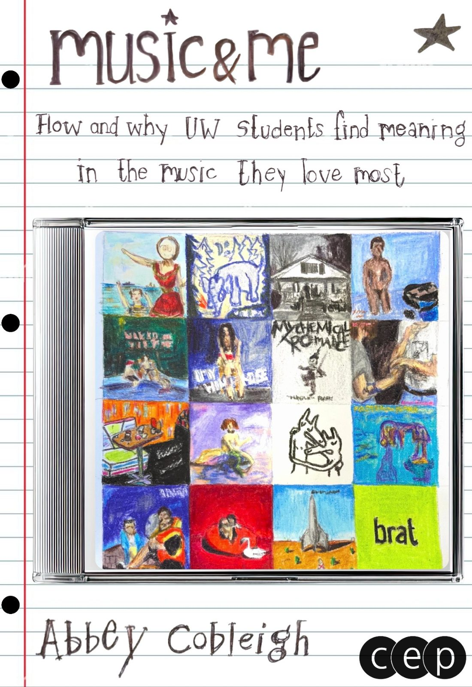
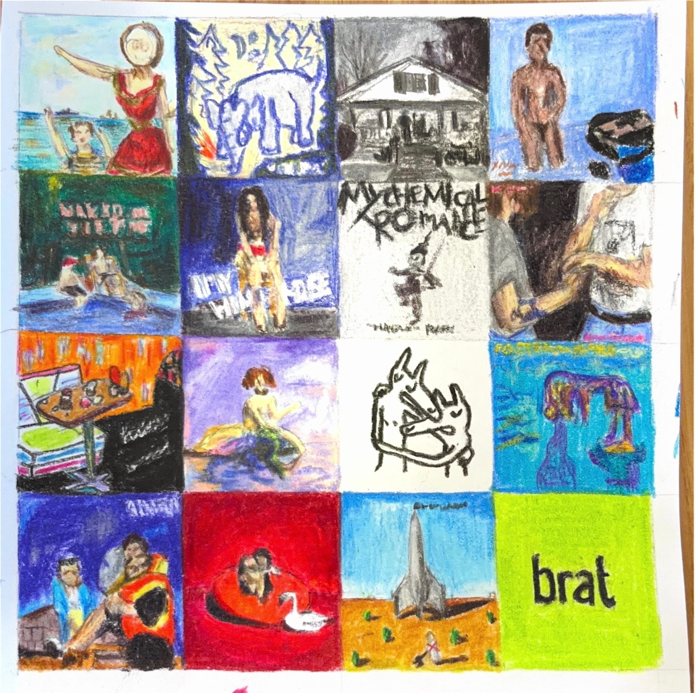
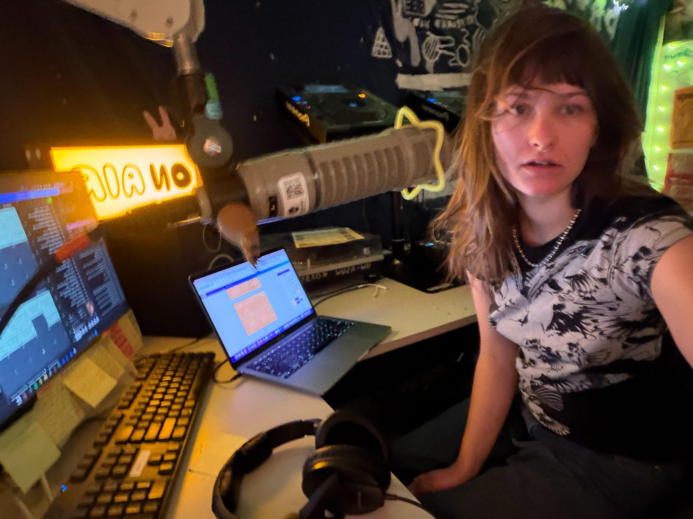
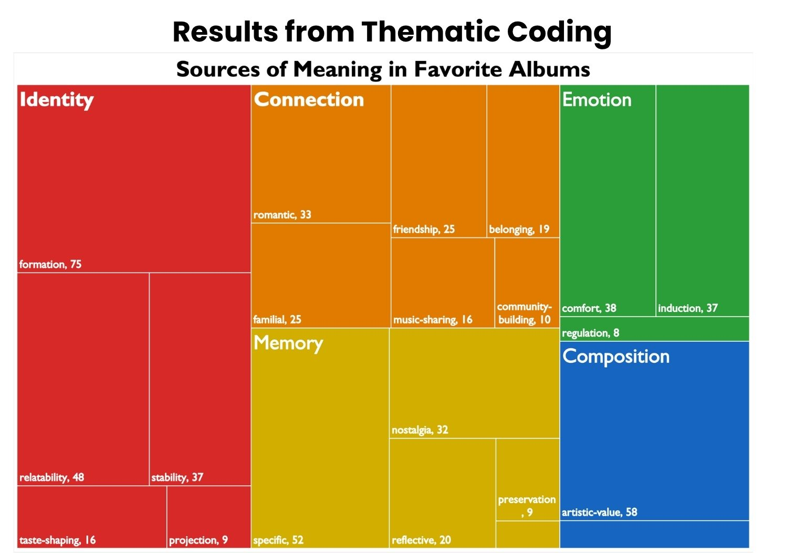
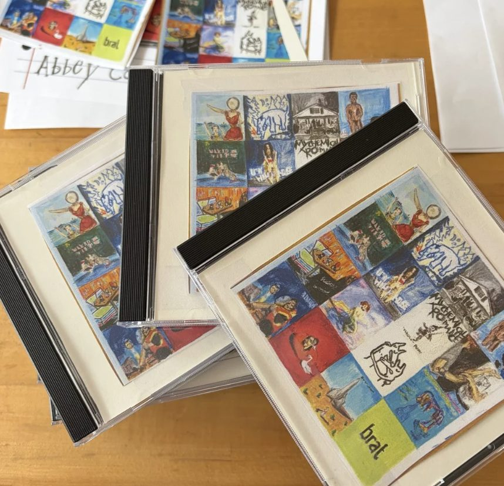

Music shapes identity
DeNora (1999) frames music as a “technology of the self” — a tool people actively use to build who they are.
How & why UW students find meaning in the music they love most.

Senior Project Night Ad Poster

I was sitting at a café with my friend Nina, and I asked her what her favorite album was.
She ended up describing how her favorite album, Twin Fantasy by Car Seat Headrest, changed the way she saw the world and how she interacted with the people in her life. It taught her things she still thinks about every single day.
It was so inspiring that it made me wonder whether this was a universal experience, and it made me want to find a way to tell people's stories and memorialize them!
In what ways do favorite albums become meaningful objects in the lives of UW students, and through what mechanisms is that meaning constructed?

DeNora (1999) frames music as a “technology of the self” — a tool people actively use to build who they are.
Janata (2009) shows emotionally intense music activates autobiographical-memory pathways in the brain.
Suttie (2016) finds shared listening creates measurable neurochemical bonds between people.
Offers a framework for turning lived experience into compelling, ethical stories — the bridge from data to broadcast.
Posted fliers around campus inviting students to talk about their favorite album.
Seventeen UW students, 15–35 minutes each, recorded on Voice Memos, transcribed, then cleaned by hand.
Abductive coding — neither purely deductive nor inductive. The literature review shaped what I was attuned to, but the themes were grounded in what participants actually said, not categories imposed in advance.
Drafted a script across spring quarter, wrote seventeen narrative bios plus an intro and outro, performed eleven live on air, and pre-recorded all seventeen for the CDs.
Meaning derived from the work itself.
“I really liked that the whole album is like a story.”
Meaning through affective experience.
“Albums like this make me feel safe and grounded.”
Meaning through social & relational context.
“I knew if I saw someone listening to MCR we were gonna be friends.”
Meaning through self-construction.
“It reminds me to just love and experience what I'm experiencing right now.”
Meaning through temporal anchoring.
“It's almost become more special to me, because now it's really like a memory.”

“It felt nostalgic even though it was the first time I heard it.”
“I'll probably never be able to listen to it without thinking of her.”
“It just keeps coming with me every year, to different places.”
“It makes me remember some of the best times of my life.”
“I'll listen to those songs and they'll bring me energy.”
“You have to take the love that is there and enjoy it.”
Streamed live on Rainy Dawg Radio — UW's student-run station — on May 7, 1–2 pm. Eleven students' stories, told on air alongside their music.

An extended edition with all seventeen narrative bios, given back to the interviewees — their stories permanently memorialized in a form you can hold.
A question as simple as “what's your favorite album?” opens a far broader conversation, revealing how people see themselves and make sense of their lives. They love the music they love because it taught them something, or holds their good times, hard times, and the people they love. The meaning always reaches far beyond the audio, and almost everyone shared one quiet certainty: that the album would always be there for them.
CD artwork designed by Sofia Geherin. Thank you to every student who shared their story.